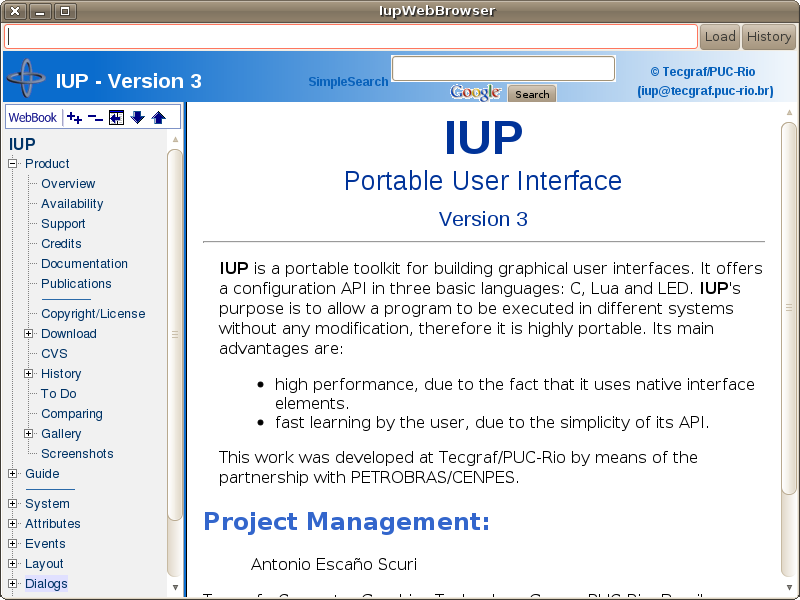

Creates a web browser control. It is responsible for managing the drawing of the web browser content and forwarding of its events.
In Linux, the implementation uses the WebKit/GTK+, the new GTK+ port of the WebKit, an open-source web content engine. More information about WebKit/GTK+ (building, dependencies, releases, etc) can be seen in Notes section. It is only available for Linux26g4 and Linux26g4_64 systems.
In Windows, the implementation uses the IupOleControl to embed an instance of the Internet Explorer WebBrowser control. A listener interface is used to capture and handle events using the Active Template Library (ATL) classes. More information about ATL can be seen in Notes section. So it is only available for Visual C++ compilers when statically linking.
The IupWebBrowserOpen function must be called after IupOpen. The iupweb.h file must also be included in the source code. The program must be linked to the controls library (iupweb). If static linking is used then in Windows must be linked with the "iupole" library and in Linux must be linked with the "webkit-1.0" library
To make the control available in Lua use require"iupluaweb" or manually call the initialization function in C, iupweblua_open, after calling iuplua_open. When manually calling the function the iupluaweb.h file must also be included in the source code, and the program must be linked to the lua control library (iupluaweb).
Ihandle* IupWebBrowser(void); [in C]
iup.webbrowser{} -> (ih: ihandle) [in Lua]
webbrowser() [in LED]
Returns: the identifier of the created element, or NULL if an error occurs.
BACKCOUNT [GTK Only] (read only): gets the number of items that precede the current page.
BACKFORWARD (write only): sets the number of steps away from the current page and loads the history item. Negative values represent steps backward while positive values represent steps forward.
GOBACK (write only): go to the previous page. Same as BACKFORWARD=-1. (since 3.23)
GOFORWARD (write only): go to the next page. Same as BACKFORWARD=1. (since 3.23)
CANGOBACK (read-only): informs if there is a previous page. (since 3.23)
CANGOFORWARD (read-only): informs if there is a next page. (since 3.23)
COPY (write only): copy the selection to the clipboard. (since 3.10)
FORWARDCOUNT [GTK Only] (read only): gets the number of items that succeed the current page.
HTML: loads a given HTML content. (not write only since 3.30)
ITEMHISTORYid [GTK Only] (read only): Returns the URL associated with a specific history item. Negative "id" value represents a backward item while positive "id" value represents a forward item ("0" represents the current item).
INNERTEXT [Windows Only]: the innerText property of the HTML element marked with the ID given by the attribute ELEMENT_ID. (since 3.24)
ATTRIBUTE [Windows Only]: the content attribute of the HTML element marked with the ID given by the attribute ELEMENT_ID. The name of the content attribute is given by the attribute ATTRIBUTE_NAME. (since 3.24)
PRINT (write only): shows the print dialog. In Windows if set to Yes will display the system print dialog (since 3.30). (since 3.10)
PRINTPREVIEW [Windows Only]: shows a print preview dialog. (since 3.30)
RELOAD (write only): reloads the page in the webbrowser.
SELECTALL (write only): selects all contents. (since 3.10)
STATUS (read only): returns the load status. Can be "LOADING", "COMPLETED" or "FAILED".
STOP (write only): stops any ongoing load in the webbrowser.
VALUE: sets a specified URL to load into the webbrowser, or retrieve the current URL.
ZOOM: the zoom factor of the browser in percent. No zoom is 100%. (since 3.10)
EDITABLE: enable the design mode, or the WYSIWYG HTML editor. Can be Yes or NO. (since 3.30)
(All the following attributes depends on the EDITABLE attribute)
NEW (write-only): initializes blank document. Value is ignored.
OPENFILE (write-only): open an HTML file given its filename. In Windows if the file is modified it will ask for a confirmation.
SAVEFILE (write-only): save the contents in a HTML file given its filename. In Linux will save in a .mhtml file with all the images packed in a single file.
DIRTY [Windows Only]: Returns Yes or No if the contents has been edited by the user.
UNDO (write-only): undo the last editing.
REDO (write-only): redo the last editing.
CUT (write-only): cuts the selection to the clipboard.
PASTE (write-only): pastes the clipboard to the selection or caret.
SELECTALL (write-only): selects all the contents.
FIND [Windows Only] (write-only): shows a dialog for finding a text.
EXECCOMMAND (write-only): executes an editing command. Possible commands: CUT, COPY, PASTE, UNDO, REDO, SELECTALL, BOLD, ITALIC, UNDERLINE, STRIKETHROUGH, JUSTIFYLEFT, JUSTIFYCENTER, JUSTIFYRIGHT, JUSTIFYFULL, INDENT, OUTDENT, REMOVEFORMAT, DELETE, SUBSCRIPT, SUPERSCRIPT, INSERTORDEREDLIST, INSERTUNORDEREDLIST, UNLINK.
COMMANDSTATE [Windows Only] (read-only): returns the command state. Can be Yes or No. The command name must be stored on the attribute COMMAND.
COMMANDENABLED [Windows Only] (read-only): returns if the command is enabled. Can be Yes or No. The command name must be stored on the attribute COMMAND.
COMMANDTEXT [Windows Only] (read-only): returns the command text if any. The command name must be stored on the attribute COMMAND.
COMMANDVALUE [Windows Only] (read-only): returns the command value if any. The command name must be stored on the attribute COMMAND.
INSERTIMAGE (write-only): inserts an image given its url. In Windows if value is NULL displays a system dialog for inserting an image.
INSERTIMAGEFILE (write-only): inserts an image given its filename.
CREATELINK (write-only): inserts a link given its url. In Windows if value is NULL displays a system dialog for editing a link.
INSERTTEXT (write-only): inserts a text at the current selection or caret.
INSERTHTML (write-only): inserts a formatted text at the current selection or caret.
FONTNAME: font face name. In Linux is write-only.
FONTSIZE: font relative size. In Linux is write-only. Can be a number form "1" to "7", meaning 1: x-small, 2: small, 3: medium, 4: large, 5: x-large, 6: xx-large, 7: xxx-large.
FORMATBLOCK: The block format. In Linux is write-only. It can be: "Heading 1", "Heading 2", "Heading 3", "Heading 4", "Heading 5", "Heading 6", "Paragraph", "Preformatted" and "Block Quote". In Windows returns "Normal" for "Paragraph", "Formatted" for "Preformatted" and "Block Quote" is not supported.
FORECOLOR: the foreground color of the selected text. In Linux is write-only.
BACKCOLOR: the background color of the selected text. In Linux is write-only.
ACTIVE, FONT, EXPAND, SCREENPOSITION, POSITION, MINSIZE, MAXSIZE, WID, TIP, RASTERSIZE, ZORDER, VISIBLE: also accepted.
COMPLETED_CB: action generated when a page successfully completed. Can be called multiple times when a frame set loads its frames, or when a page loads also other pages.
int function(Ihandle* ih, char* url); [in C] ih:completed_cb(url) -> (ret: number) [in Lua]
ih:
identifier of the element that activated the
event.
url: the URL address that completed.
ERROR_CB: action generated when page load fail.
int function(Ihandle* ih, char* url); [in C] ih:error_cb(url) -> (ret: number) [in Lua]
ih:
identifier of the element that activated the
event.
url: the URL address that caused the error.
NAVIGATE_CB: action generated when the browser requests a navigation to another page. It is called before navigation occurs. Can be called multiple times when a frame set loads its frames, or when a page loads also other pages.
int function(Ihandle* ih, char* url); [in C] ih:navigate_cb(url) -> (ret: number) [in Lua]
ih:
identifier of the element that activated the
event.
url: the URL address to navigate to.
Returns: IUP_IGNORE will abort navigation (since 3.4).
NEWWINDOW_CB: action generated when the browser requests a new window.
int function(Ihandle* ih, char* url); [in C] ih:newwindow_cb(url) -> (ret: number) [in Lua]
ih:
identifier of the element that activated the
event.
url: the URL address that is opened in the new window.
UPDATE_CB: action generated when the selection was changed and the editor interface needs an update. Used only when EDITABLE=Yes. [Windows Only] (since 3.30)
int function(Ihandle* ih); [in C] ih:update_cb() -> (ret: number) [in Lua]ih: identifier of the element that activated the event.
MAP_CB, UNMAP_CB, DESTROY_CB: callbacks are supported.
To learn more about WebKit and WebKitGTK+:
The WebKit Open Source Project
The WebKitGTK+ web page
WebKitGTK+ wiki
WebKitGTK+ tracker
To learn more about Internet Explorer WebBrowser control and ATL:
WebBrowser Control from C/C++
Creating ATL sinks
Examples of sinking COM events
